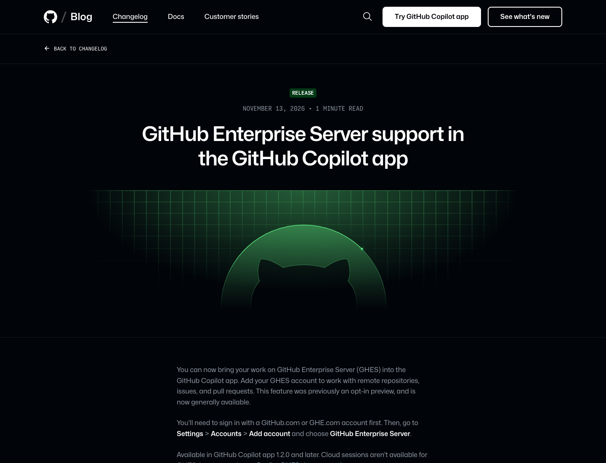
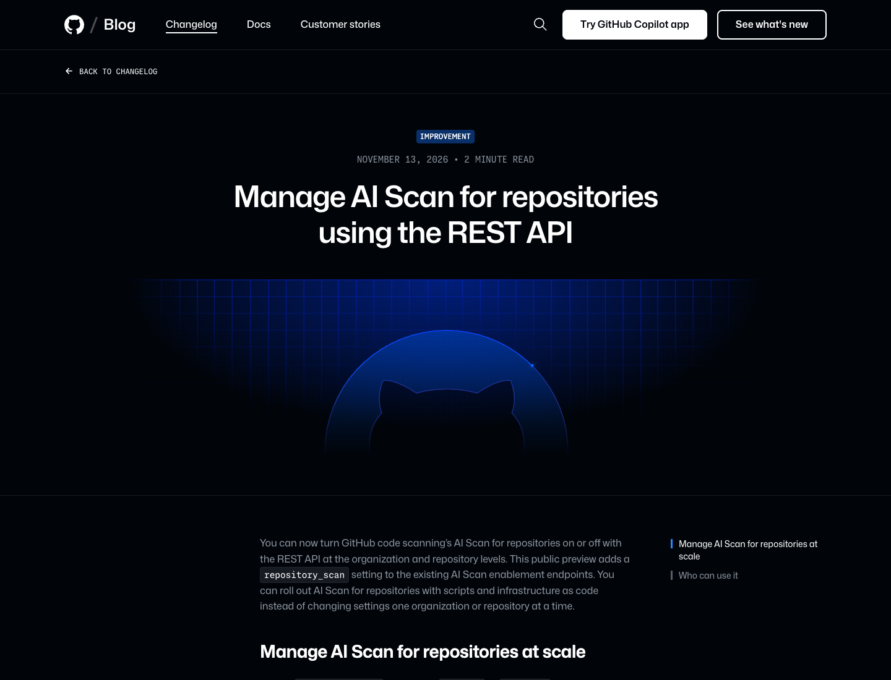
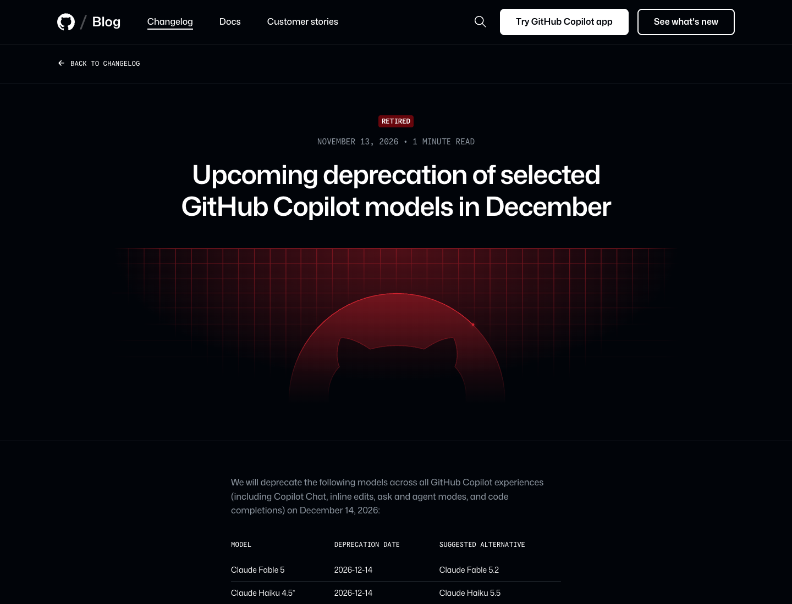
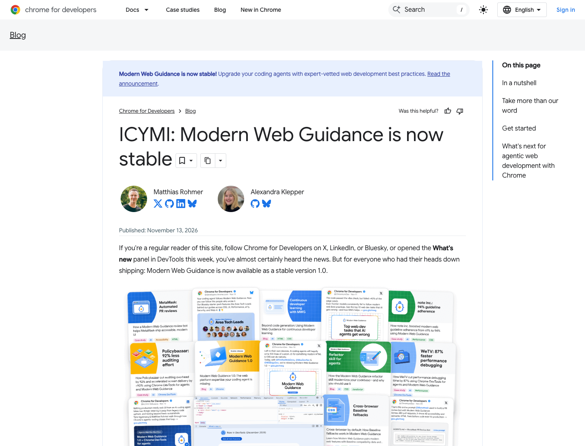
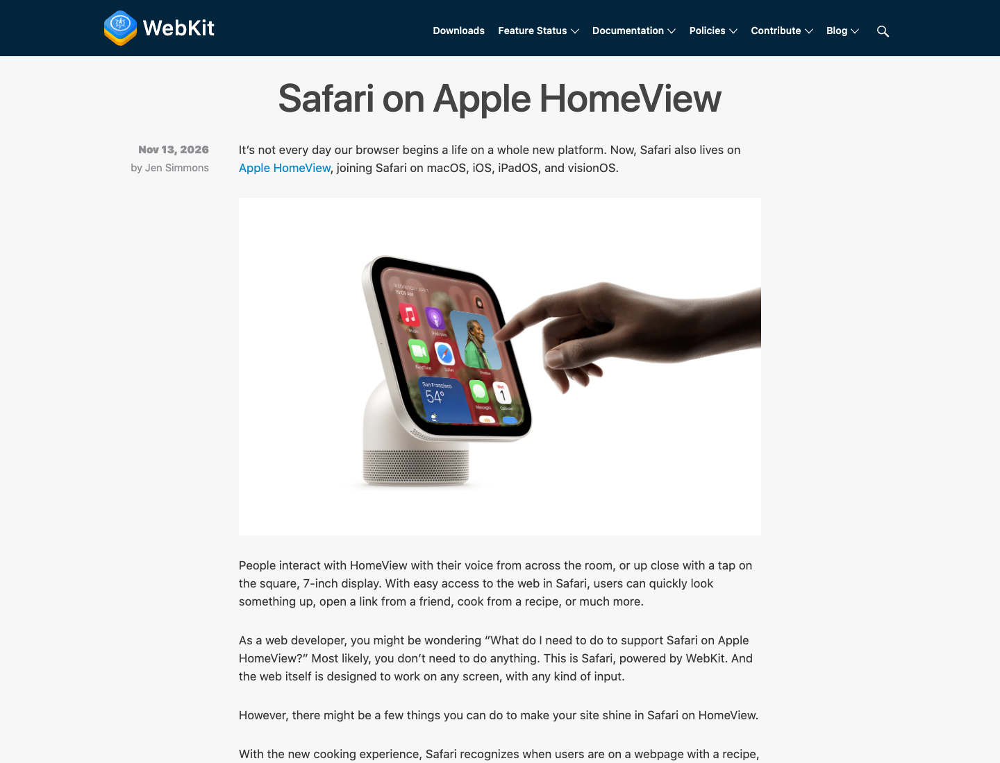
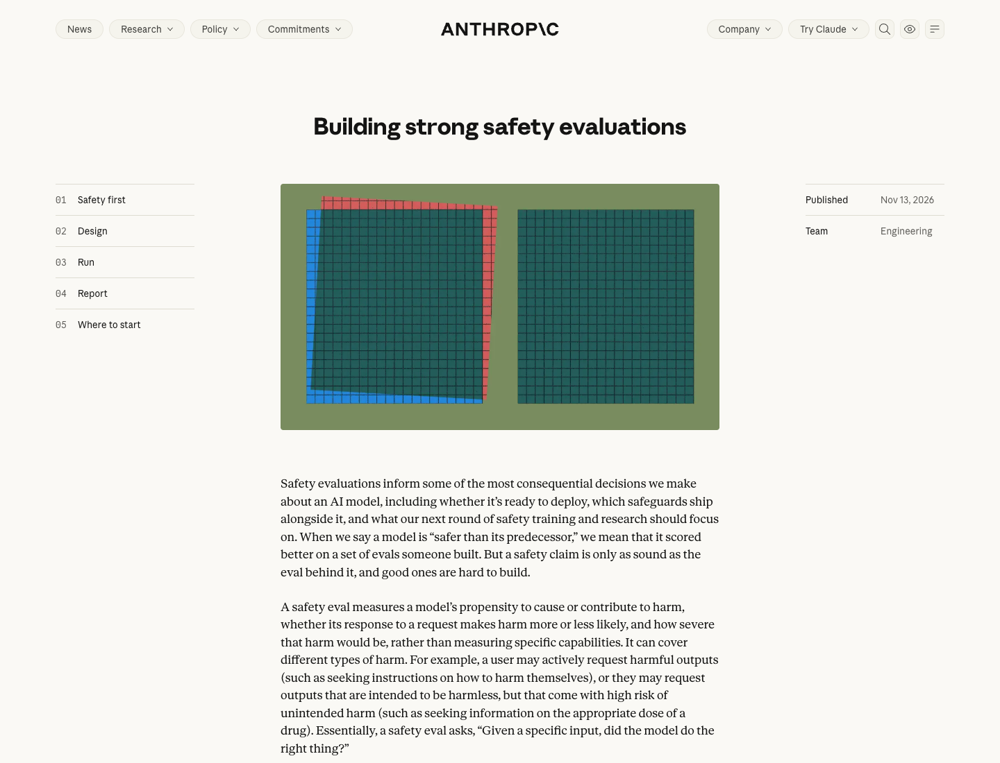
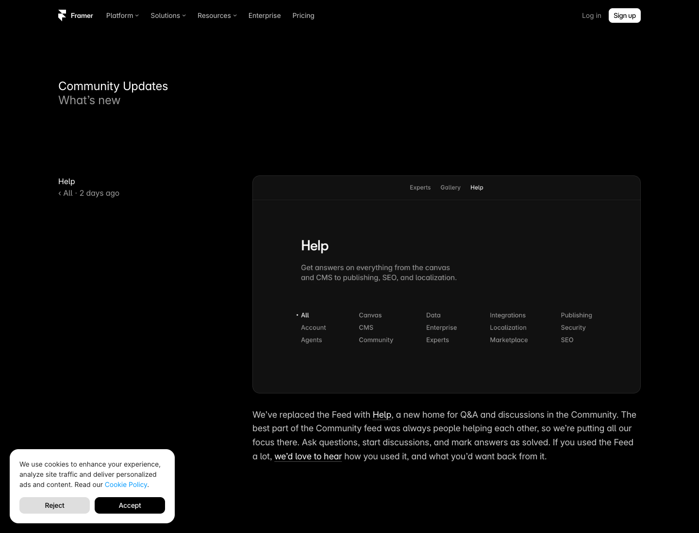
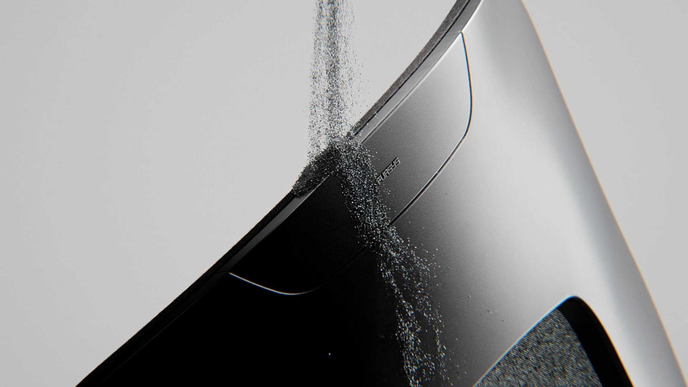

今天没有再追一轮“谁又生成了什么”，更有用的更新集中在边界：GitHub 把 GHES 带进 Copilot app，却明确留下 cloud session 的缺口；AI Scan 能用 API 批量开关，但每次实际扫描仍要单独触发、单独计 credits；六个模型也已经写下退役日期。
另一边，Chrome、WebKit 和 Anthropic 都在把模糊的“最佳实践”变成可验证的条件：跨浏览器兼容要有 Baseline，方形短视口要真的跑 448×364，AI 评测先写清问题和量尺。工具能力越来越像快消品，团队真正该积累的是测试矩阵、权限图和迁移账本。

GitHub Copilot app 1.2.0 起正式支持 GitHub Enterprise Server，已从 opt-in preview 转为 GA。用户要先登录 GitHub.com 或 GHE.com，再添加 GHES 账户，之后可以在 app 里处理远程仓库、issue 和 pull request；GHES 仍不能使用 cloud sessions。
对自托管代码库来说，这不是“云端 agent 全打通”，而是上下文入口先统一、执行边界继续分叉。设计工程团队在流程图里应把本地 session、cloud session、GHES 数据源分别标出来，否则同一个“让 Copilot 改页面”的动作，会在不同仓库上得到完全不同的权限和交付路径。

GitHub 给 AI Scan 增加了组织与仓库级 REST 开关，repository_scan 可以和现有 pr_scan 一起用脚本或 IaC 管理。组织关闭时仓库不能自行开启；企业策略不允许会返回 422，而且同一请求里的两项配置都不会落地。
开关打开并不会自动扫描，仍要由有写权限的人按需运行，每次扫描消耗 GitHub Code Security AI credits；GHES 也不支持。它适合把“哪些前端仓库必须扫 agent 生成代码”写进治理配置，但费用和触发动作还在配置之外，别把 enabled 误读成已经覆盖。

GitHub 将在 12 月 14 日从 Copilot Chat、inline edits、ask / agent mode 和 code completion 中移除 Claude Fable 5、Claude Haiku 4.5、Gemini 3.8 Flash、Gemini 4 Argon、Grok 4.6 与 Kimi K3，并给出除 Kimi 之外的替代模型。年度个人订阅用户的 Claude Haiku 4.5 是例外。
模型选择器不是稳定接口。团队若把视觉回归、代码生成或评审 prompt 绑定到具体模型，应该在退役前把基准任务跑一轮新旧对照，保存截图、结构差异、token 与失败样本；只把名字替换成“建议替代项”，等于默认接受行为漂移。

前几天还是“先看看指南”，11 月 13 日它正式变成稳定版 1.0：Chrome、Firefox 与 Edge 团队共同维护，指南覆盖性能、样式、无障碍、安全、隐私和表单；每条都带 Baseline 兼容数据与 fallback，公开 eval dashboard 也能回看数千次测试。
官方案例里，MetaMask 在约 480 个 PR 上得到 43 个无障碍与语义修复，WeTV 把 recurring CLS 的自动诊断修复率做到 90%。这些数字不等于换个 skill 就自动提质，但它终于给“让 coding agent 写现代 Web”补上版本、兼容与评测三件套。安装前先在一个真实页面跑 legacy-scan，看它带来的改动量和噪音，再决定是否进 CI。

Safari 现在运行在 Apple HomeView 的方形 7 英寸屏幕上，主要输入既有远距离语音，也有近距离触控。WebKit 还把网页结构直接变成系统体验：Recipe JSON-LD 会触发逐步烹饪视图，视频字幕要用 track + WebVTT；HomeView 报告 iOS user agent，因此官方再次要求用 feature detection，别把 iOS 等同 iPhone。
最实用的测试尺寸已经给了：448×364。固定头尾、超高 modal、只有图标没有清楚标签、依赖 hover 的控件，都会在短视口和语音输入里露馅。产品不必为 HomeView 单独重做一套页面，先把首页、登录、支付和弹窗在这个尺寸跑通，顺手也能清掉手机横屏的老问题。

Anthropic 把安全评测拆成 Design、Run、Report：先确定问题是观察性的还是因果性的，再确认量尺真的测到目标；运行前做 preregistration，报告里完整披露统计、文档与缺陷。文章还明确提醒，多选或开放题、选项顺序、样本和评分方式都能改变结果。
这不是 UI 生成器的直接测评模板，但方法很能治“凭一张漂亮首屏宣布模型更好”。设计团队比较两个 agent 时，也该先写清要测的是首稿质量、可编辑性、组件复用还是修订成本；一次只改一个变量，保留失败样本，并让结论和证据一一对上。

Framer Community 用 Help 替换了原来的 Feed，把入口收敛到 Q&A 与讨论，支持提问、讨论和标记 solved answer。它按 Canvas、CMS、Agents、Integrations、Publishing、Security、SEO 等任务分类，不再把所有内容混在一条动态流里。
这是个很小但很干净的信息架构判断：社区产品真正可复用的资产不是“今天谁发了什么”，而是一个问题有没有被解决、后来的人能不能找到答案。要做用户社区或内部知识库，solved 状态和任务分类通常比点赞、关注和无限 feed 更先改变检索效率。

来源：Stash 文章https://www.stashmedia.tv/reframe-studio-get-comfortable-in-fursys-manta-chair/｜原片：Vimeohttps://vimeo.com/1240694152｜客户：Fursys｜产品设计：Jehs+Laub｜制作：Reframe Studio｜片长：60 秒
Manta 是一把以蝠鲼展开轮廓为灵感的任务椅，Reframe 没有用常规办公室情境讲“坐得舒服”，而是把产品卖点拆成材质隐喻：云状烟雾承接包裹感，蓝色织带强调面料流动，陶土块和碎裂炭黑对应不同表面处理，再回到宽头枕、极简骨架与曲面靠背。官方列出的工具链是 Cinema 4D、Houdini、Redshift、After Effects 与 Photoshop。
静帧里最好的地方是抽象段落没有抢走产品辨识度。色彩、颗粒和软体模拟都围绕椅背弧线展开，镜头切到局部时仍能认出是哪一块结构；材质不是贴在产品外面的 moodboard，而是产品形态的放大器。对产品发布片来说，这比把每个功能都配一套特效省得多，也更容易形成统一 hero 语言。
目前 player.vimeo.com/video/1240694152 在带飞书 referrer 的请求里返回 401，Vimeo oEmbed 的带播放按钮缩略图又只有 295×166，均不适合飞书主卡；本次视觉判断来自 Stash 制作说明和五张 2048×1152 官方静帧，未把完整节奏当成已核验事实。下一支硬件片可以先给每个结构卖点配一种材料行为，再把动画参数收敛到同一套曲率、阻尼和色板，别从“这镜头还能加什么”开始。
飞书发布采用 fallback=image：保留一张 2048×1152 Stash 官方静帧与 Stash / Vimeo 链接，不插入返回 401 的 Vimeo iframe。
Stash API 在 11 月 13 日之后只多出一条新片，已升级为今日主卡；其余条目保留覆盖状态，避免把旧 feed 重新包装成新消息。
legacy-scan 噪音、Baseline fallback 与 CI 运行时间。FURSYS | Manta；Vimeo player 401，按规则使用 Stash 2048×1152 官方静态图降级，并保留双链接。核验说明：GitHub Changelog、Chrome for Developers、WebKit、Anthropic Engineering、Framer Community Updates、Stash 首页 / WordPress API / 文章页与 Vimeo oEmbed 于 2026-11-14 回读。正文 8 张配图原始宽度为 1440–2048px，已逐张目视检查；飞书文档、静态视频降级与群消息状态以最终 CLI 回读为准。